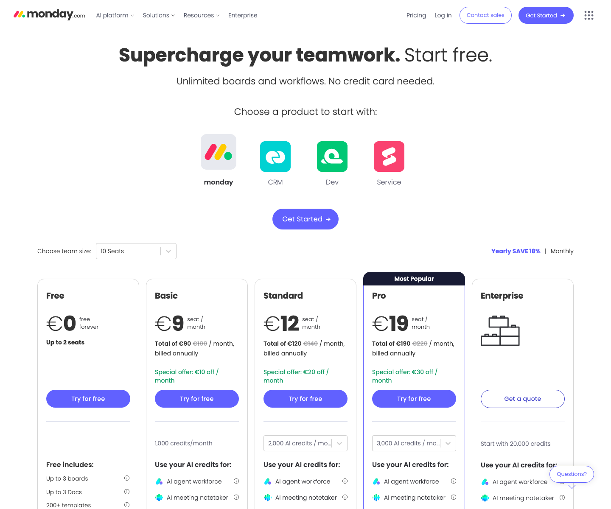

Pricing Page Visual

monday.com's public pricing page shows a plan ladder from Free through Enterprise, with seat-count selection and annual/monthly billing context shaping the listed plan prices.
The mechanism to notice is the combination of plan tier and seat count. The same product choice becomes more expensive as more collaborating users are added or as the team crosses into higher-tier workflow controls.
Screenshot captured: 2026-05-14 · Source reviewed: 2026-05-14
Core Insight
Pricing Logic Deconstruction
The bill changes when selected plan tier, paid seat count, or workflow capability boundaries change.
Seat volume multiplies the tier unit price.
Continuous seat expansion plus threshold jumps at tier boundaries.
Capability boundary crossing forces a higher plan state.
Strategic Logic
Pricing Mechanism Logic
Primary component: tier_ladder
| Tier state | Boundary to next state | Unit bill logic | Bill consequence |
|---|---|---|---|
| Basic ($9/seat/month, annual billing view) | Need timeline, guest, or larger collaboration controls | Seat count × Basic unit price | Bill grows linearly with seats. |
| Standard ($12/seat/month) | Need deeper automation/integration allowances | Seat count × Standard unit price | Per-seat rate and total bill rise versus Basic. |
| Pro ($19/seat/month) | Need enterprise governance/security posture | Seat count × Pro unit price | Higher unit price plus same seat multiplier. |
| Enterprise (quote-based / contact sales) | Negotiated enterprise scope and controls | Contracted pricing state | Billing shifts from listed unit price to quote-based terms. |
Bill Examples
Illustrative public-page logic only (not a contract quote).
| Scenario | State | Illustrative bill logic | Decision signal |
|---|---|---|---|
| 10-seat team on Standard | Published tier | 10 × $12 = $120/month equivalent on annual view | Seat growth directly expands spend. |
| 35-seat team on Pro | Published tier | 35 × $19 = $665/month equivalent on annual view | Capability and headcount both drive increase. |
| 120-seat team needing Enterprise controls | Quote-based tier | No fixed public unit price; move to sales quote | Governance boundary triggers pricing-state change. |
Pricing Architecture
Boundary Crossing Map
Decision Tension Layer
| Tension | Pricing-structure cause | Why it matters |
|---|---|---|
| Adoption vs cost control | Per-seat expansion compounds monthly spend. | Teams may restrict collaborators, reducing product spread. |
| Capability depth vs price step-up | Tier boundaries bundle advanced controls with higher unit rates. | Buyers may delay needed upgrades and accept process friction. |
| Enterprise trust vs quote opacity | Enterprise shifts from listed rates to negotiated terms. | Opaque pricing can add procurement cycle time. |
Decision Alternatives
| Pricing move | Expected effect | Trade off | Leading indicator |
|---|---|---|---|
| Introduce collaborator-light seat class between viewer and full seat | Lowers expansion friction for partial contributors | Potential ARPU dilution if full seats downgrade | Net seat growth with stable or rising total revenue per account |
| Publish clearer tier-boundary usage thresholds on pricing page | Reduces surprise at upgrade moments | May slow urgency for premature upgrades | Lower sales-call objections on plan-transition clarity |
| Add Enterprise starting package bands (still quote-based) | Improves procurement predictability | Less negotiating flexibility at top end | Shorter enterprise sales cycle to quote acceptance |
Decision Priority
| Rank | Move | Why this priority | Risk | Complexity | Success metric |
|---|---|---|---|---|---|
| 1 | Publish clearer tier-boundary usage thresholds | Fastest trust improvement without contract redesign | Could anchor buyers to lower tiers longer | Low | Increase in self-serve tier upgrades with lower objection rates |
| 2 | Enterprise starting package bands | Directly addresses quote-opacity tension | May reduce sales flexibility | Medium | Reduced days from enterprise discovery to pricing acceptance |
| 3 | Collaborator-light seat class | Potentially strongest expansion lever but requires packaging changes | Cannibalization of full paid seats | High | Positive revenue lift from net new collaborating users |
Reasoning Error Check
| Reasoning risk | Case-specific check | Evidence needed | Failure signal |
|---|---|---|---|
| Overstating published Enterprise price certainty | Verify Enterprise is quote-based on official pricing page | Current pricing page capture + text reference | Any internal model using fixed public Enterprise unit price |
| Assuming all seat additions carry equal value density | Compare heavy creators vs light collaborators at expansion | Seat-type usage mix and retention by role | Seat growth with declining activation depth |
| Treating annual discount as universally stable | Confirm annual discount policy in current FAQ copy | Dated source excerpt from official pricing FAQ | Examples relying on outdated discount assumptions |
| Hiding trade offs in recommended pricing moves | Keep adoption, ARPU, and procurement trade offs visible for every proposed move | Experiment readouts by seat mix, plan movement, and enterprise sales-cycle length | A recommendation improves one metric while silently weakening expansion quality or sales flexibility |
References
- monday.com pricing and plans (reviewed 2026-05-14).